Six historic World's Fairs and three imagined fairs of 2064, each rendered across three quality tiers on a Tenstorrent Blackhole P300C. Plus a 100-year continuity chain following the Unisphere from 1964 to 2064 using chain mode.
Phase 3 MotionAdapter · SD 1.4 base · 512 × 512 · tt-animatediff v0.8
The Eiffel Tower at the 1889 Paris Exposition Universelle, iron lattice glowing under gas lamps at dusk, crowds of visitors in Victorian dress, the Seine reflecting amber light, Belle Époque grandeur, painterly impressionist
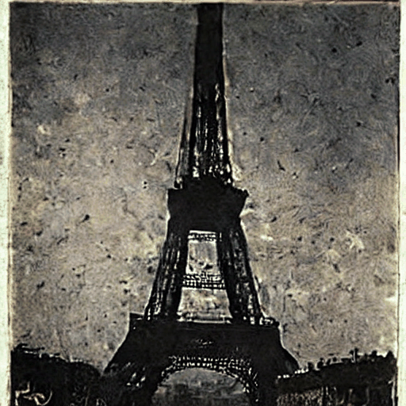
Generating…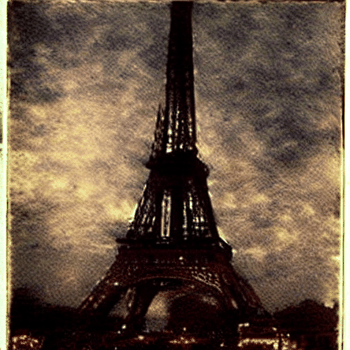
Generating…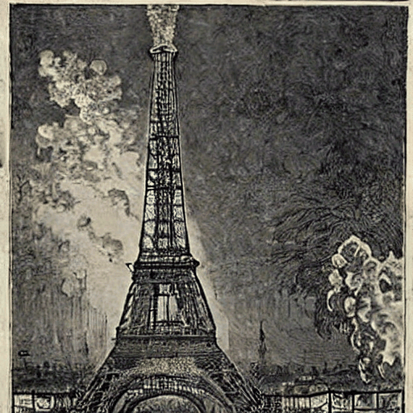
Generating…The White City at the 1893 Chicago World's Columbian Exposition, neoclassical white marble palaces reflected in the Grand Basin, electric lights illuminating the Court of Honor at night for the first time, crowds in Gilded Age attire, moonlit clouds, majestic and ethereal
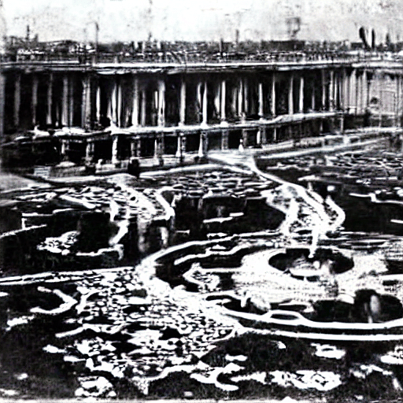
Generating…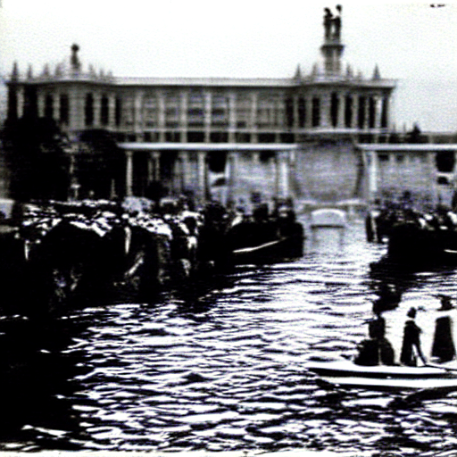
Generating…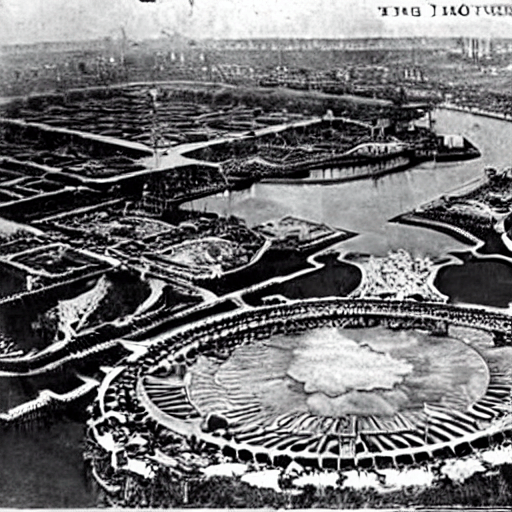
Generating…The 1939 New York World's Fair at night, the Trylon and Perisphere glowing white against a violet sky, art deco streamlined pavilions, fountains lit in vivid color, visitors in 1930s dress gazing at the future, retro-futurist wonder, cinematic
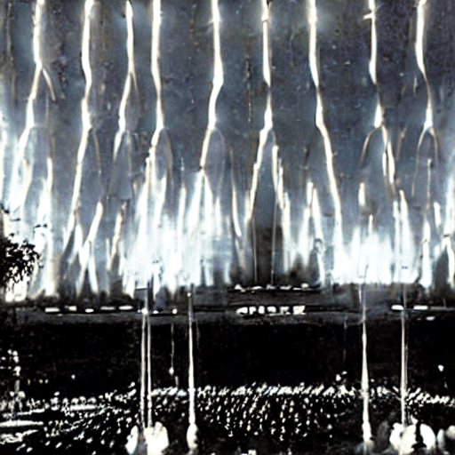
Generating…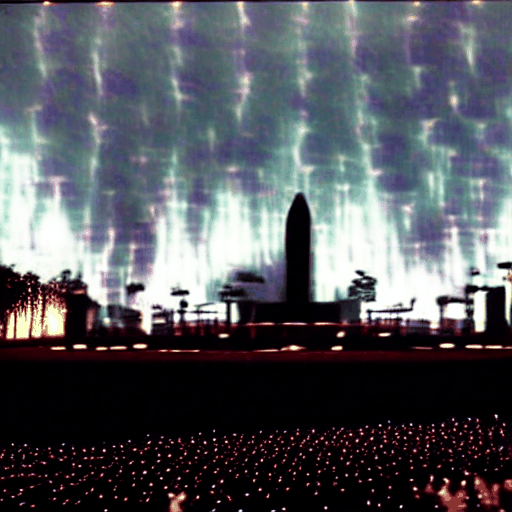
Generating…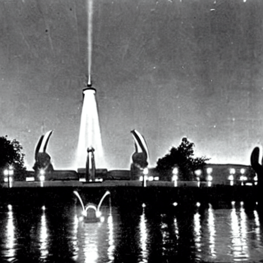
Generating…The Atomium at the 1958 Brussels World Expo, nine steel spheres magnifying an iron crystal atom 165 billion times, golden evening light, Cold War era optimism, swooping modernist pavilions in the background, atomic age, silver and chrome
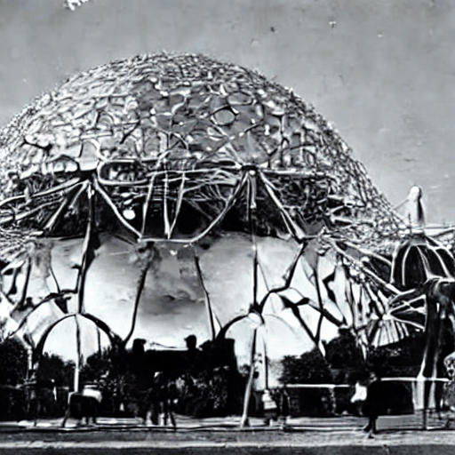
Generating…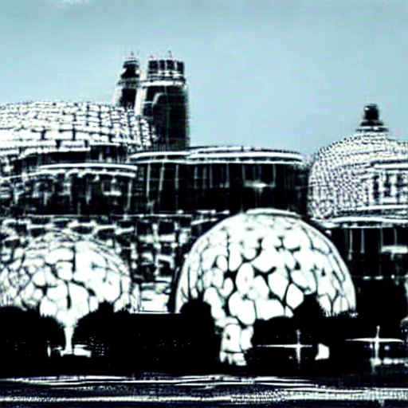
Generating…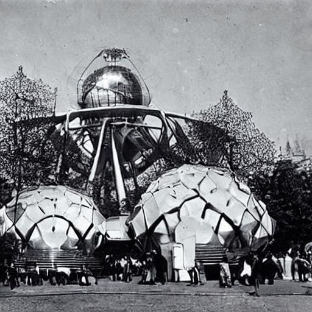
Generating…The Unisphere at the 1964 New York World's Fair, massive stainless steel globe rising from Flushing Meadows, three orbital rings glinting in summer sunlight, IBM and Ford pavilions in background, mid-century modern optimism, Space Age, cinematic wide shot, warm afternoon light
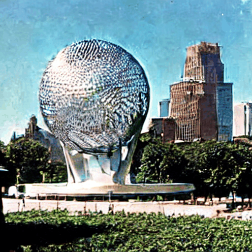
Generating…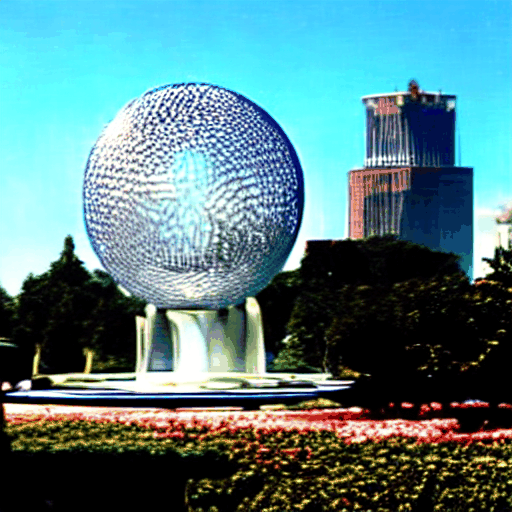
Generating…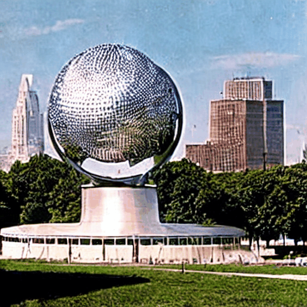
Generating…The Tower of the Sun by Taro Okamoto at Expo '70 Osaka, massive expressionist sculpture with golden face and white face, festival plaza teeming with visitors, futuristic space-frame roof structure, Japan's economic miracle, vivid colors, 1970s psychedelic energy, cinematic
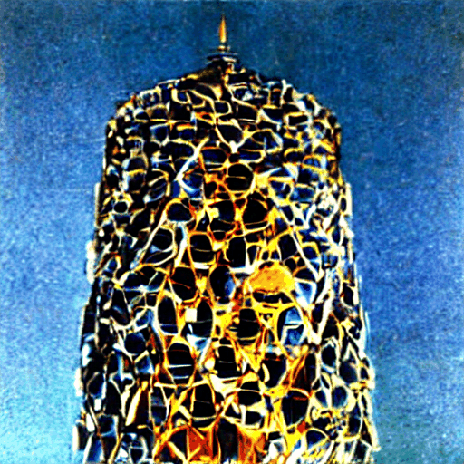
Generating…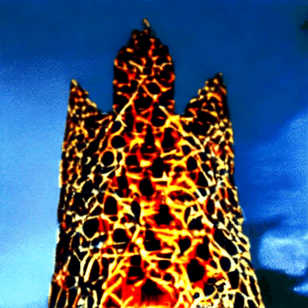
Generating…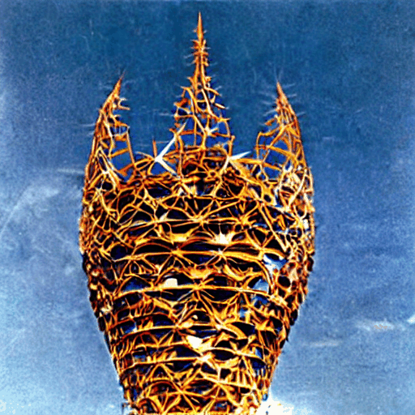
Generating…The 2064 World's Fair on the Moon, glass dome pavilions in the Sea of Tranquility, Earth rising on the horizon, bioluminescent architecture glowing against the lunar regolith, delegations from forty nations and three orbital habitats, low gravity fountains arcing impossibly high, retro-futurist meets deep future, awe-inspiring
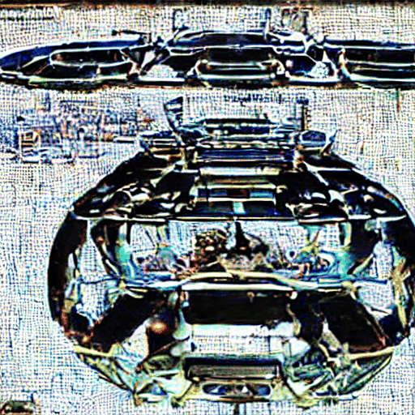
Generating…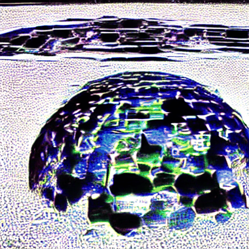
Generating…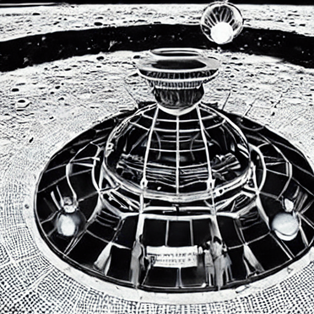
Generating…The 2064 Pacific Deepwater World Expo at 500 meters depth, coral-lattice arcologies lit by bioluminescent algae, submersibles docking at crystal pavilions, whale song translated into light, kelp forests framing the grand promenade, ethereal blue-green dreamscape, wonder and reverence for the ocean
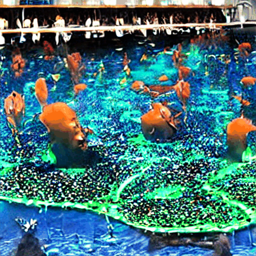
Generating…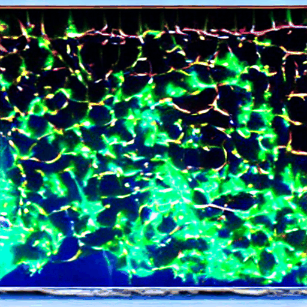
Generating…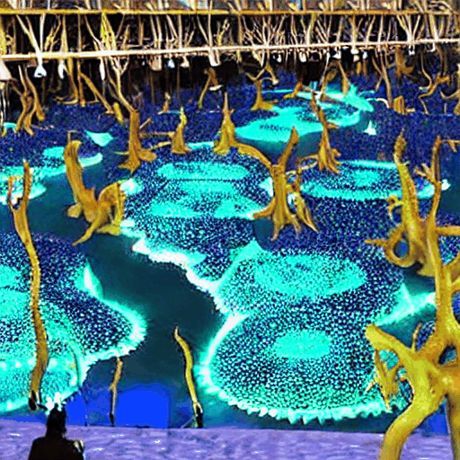
Generating…The 2064 World's Fair aboard the Orbital Ring station, a gleaming torus circling Earth at 36,000 km, nations of the world building spinning pavilions along the inner hull, Earth a blue marble through vast observation windows, zero-gravity dancers in the atrium, humanity's greatest achievement on display, cinematic 4K
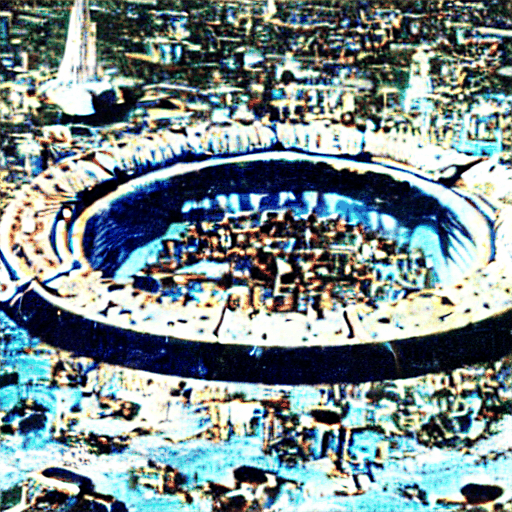
Generating…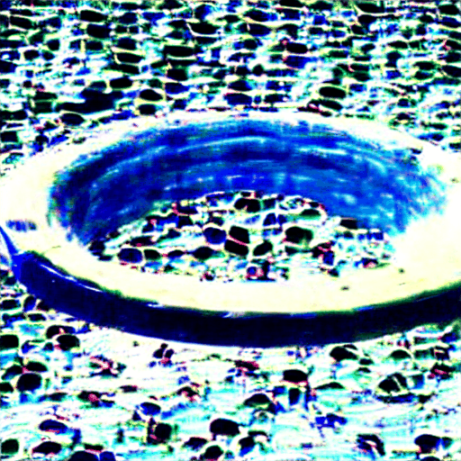
Generating…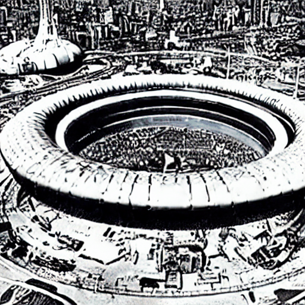
Generating…--chain-from output of the previous run at
--chain-alpha 0.35 — enough to bias the denoiser toward the previous
composition (~15% Pearson correlation) without overwriting text guidance.
The chain signal is the frame-mean of the previous denoised latents, renormalized to unit std
before injection into the seed noise.
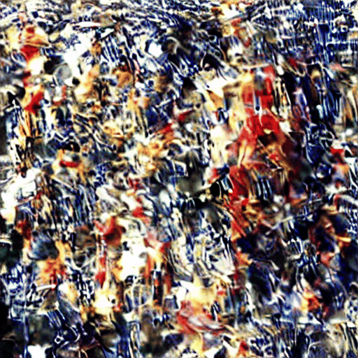
Pending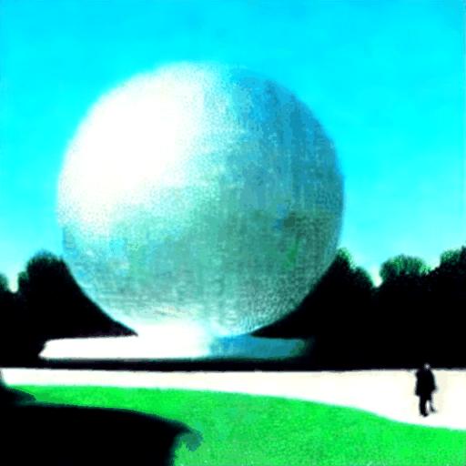
Pending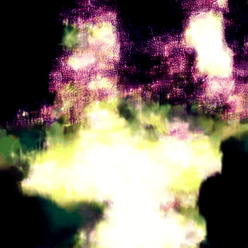
Pending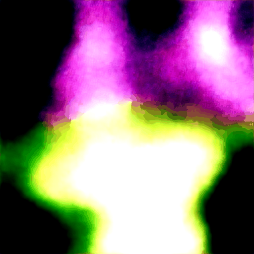
Pending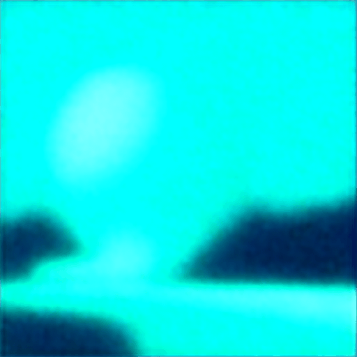
Pending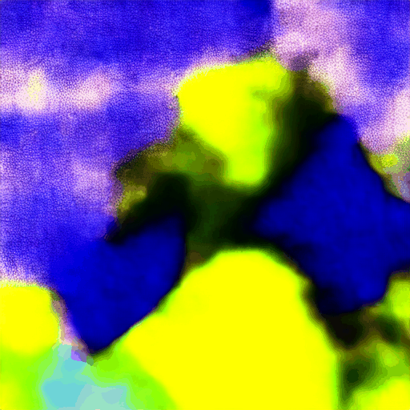
Pending--chain-save chain.pt. The next run loads them with --chain-from chain.pt
and blends them through a low-pass filter (kernel size 9) into the initial noise tensor, weighted
by --chain-alpha (0.55 here). Higher alpha = stronger visual inheritance.
The result preserves macro-composition and color palette while letting the new prompt
fully control subject and mood.
All Q1 and Q2 runs use all 4 Blackhole P300C chips in parallel via
open_mesh_device, each chip handling one prompt concurrently.
Q3 pins to a single chip with --device-id 0.
Q1 and Q2 use the Phase 3 temporal injection pipeline: AnimateDiff
guoyww/animatediff-motion-adapter-v1-5-2 weights injected at
7 UNet cross-attention points via CPU round-trip after each TTNN forward pass.
Run python scripts/generate_worlds_fair.py with an active
tt-metal virtualenv. Pass --tier Q1 for best quality,
--skip-chain to skip the Unisphere chain. All prompts and
seeds are in the script.